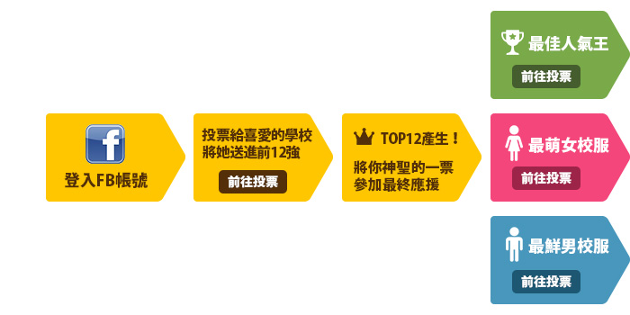

專屬高校生的青春印記
第三屆畢業季高校制服大賞熱血開跑 !
網羅全台逾５００所高中制服進行強烈的廝殺票選
究竟是純潔無敵的白襯衫、萬年不敗的水手服
還是充滿萌味的連身款能奪下最終勝利呢？
在即將來臨的畢業季，為自己的學校制服再添一筆輝煌記事吧！
今年，２０１６的制服大賞，你投哪一家！


活動
時間
第一階段到全台海選：2016/04/11-04/29，23:59止
第二階段到TOP12決選(最佳人氣/最萌女校服/最鮮男校服)：2016/05/09-05/27，23:59止
得獎公布：2016/06/08，15:00公布於同網頁，請密切注意！

賽程
說明
第一階段到全台海選：請進入制服地圖活動頁面，登入FB帳號即可投票，每日每帳號可投20票，同項目不可重複投票。
第二階段到TOP12決選(最佳人氣/最萌女校服/最鮮男校服)：請進入三立新聞網活動頁面，登入FB帳號即可投票，每帳號可投6票，同項目不可重複投票。


活動
獎項
參加獎：凡參加投票者皆具備抽獎資格，共１１名。
神準獎：精準預測前１２強之投票者，即有機會獲得OOOOO，共XX名。
應援獎：應援冠軍隊伍之投票者，即有機會獲得OOOOO，共XX名。
讚聲獎：活動期間 ，分享活動訊息至FB皆具備抽獎資格，共XX名。
注意
事項
- 01.參加者及參與投票網友所提供之個人資料，僅作為抽獎、寄發中獎通知及主辦單位寄發相關資訊使用。每人僅限一次中獎的機會，如發現重複中獎之情況或冒用他人姓名參加活動，將取消重複中獎資格。
- 02.得獎將公佈於活動網頁，中獎者將以Facebook登錄的Email進行mail通知，若在期限內未回覆正確聯絡資料者，視同放棄中獎資格。
- 03.請確認您的得獎回傳通知所填寫的聯絡及地址資料，所有資料皆會保密，只作為獎品寄發依據。逾時未修改正確寄送地址、或因資料填寫不完整或不正確導致無法通知中獎時，將視為放棄領獎資格，獎項不另行補發。
- 04.如有任何因電腦、網路、電話、技術或不可歸責任於主辦單位之事由，而使寄予得獎人之獎品有遲延、遺失、錯誤、無法辨識或毀損之情況，主辦單位不負任何法律責任，參加者亦不得因此異議。
- 05.活動之獎品以寄送的實物為準，獎品不得轉換、轉讓或折換現金。得獎者應依政府規定，獎品價值超過NT$20,000以上，依國稅局規定需繳交10%稅金。
- 06.本活動為公開良性競賽性質，參賽者不得有舞弊、或惡意攻擊訐等情事。如有以下行為主辦單位有權取消參賽者資格，並保留相關法律追訴權利：使用不當行為或程式灌票或干擾活動進行、傳播不實謠言，造成本活動或本公司名譽受損、違反本活動及政府法令之行為等。
- 07.本活動主辦單位，對本活動網站有絕對的管理權，並就參賽者或投票者之資格及票數有審查之權利；若經審認資個不符或票數有不當、不妥情事者，本活動主辦單位有權取消得獎資格或逕行刪除參賽票數且不予事先告知。
- 08.活動辦法載明於本活動網頁中，參賽者於參加本活動之同時，即視為同意並遵守本活動相關規範及注意事項。本活動因不可抗力之特殊原因無法執行時，主辦單位有權決定取消、終止、修改或暫停本活動。主辦單位亦保有修正、暫停或終止本活動之權利，恕不另行通知。
- 09.此活動所使用之軟體或程式及網站上所有內容，均由主辦單位擁有智慧財產權，任何人不得逕自使用、修改、重製、公開播送、改作、散布、發行、公開發表、進行還原工程、解編或反向組譯。若欲引用其內容，必須依法取得本活動主辦單位之正式書面授權。
※本活動並非由Facebook平台贊助、管理及開發，本活動乃由三立新聞網/制服地圖主辦，並透過此活動網頁所提供的活動管理服務來舉辦、管理本活動，您在本活動所做的行為，與所提供的資料僅提供予主辦單位管理本活動使用。